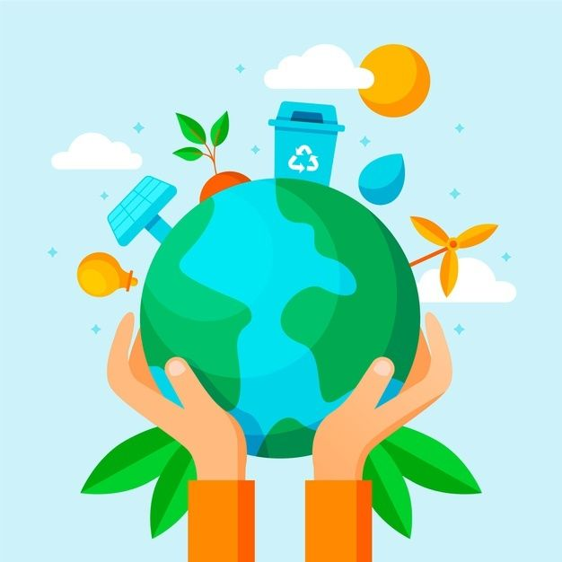

Sustentabilidade
Como a conexão campo cidade pode aprimorar as relações de sustentabilidade entre ambos?
Comemorar a conexão campo-cidade é também destacar a importância da sustentabilidade. A produção responsável de alimentos no campo e o consumo consciente na cidade ajudam a preservar o meio ambiente. Essa união é fundamental para garantir qualidade de vida para as gerações atuais e futuras.
